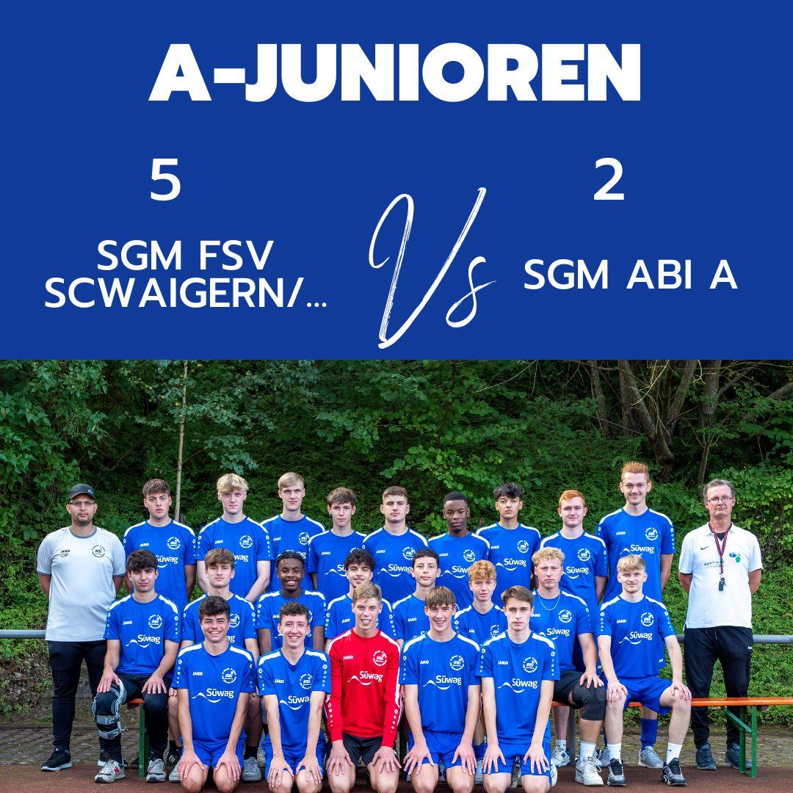

SGM FSV Schwaigern/Oberes Leintal 5:2 SGM ABI
 Am 11.11. waren wir zu Gast bei der SGM aus Schwaigern. Unser Pokalspiel unter der Woche wurde kurzfristig verlegt, so galt es nach einen kurzen Pause wieder den Ligaalltag aufzunehmen. Das letzte Auswärtsspiel der Saison stand an. Wer schon mal in Schwaigern gespielt hat, weiß um die Platzverhältnisse, entsprechend taten wir uns auf dem Platz auch schwer spielerische Lösungen zu finden. Die Hausherren hingegen schafften es uns immer wieder mit ganz einfachen langen Bällen aus zu kontern und waren ebenfalls nach Standards eiskalt. Wir hatten zwar mehr Ballbesitz, hatten aber an diesem Tag auch irgendwie das nötige Quäntchen Glück auf unserer Seite. Zur Halbzeit stand es 1:1, nachdem die Hausherren nach einem schnellen Konter in der 19. Minute in Führung gingen, konnten wir in der 35. Minute nach einer Ecke durch Enis ausgleichen.
Nach der Halbzeit war das Bild zunächst ähnlich, wir hatten den Ball, suchten nach räumen und Schwaigern konterte.. so folgte ein Doppelschlag in den Minuten 49. und 53. erhöhten die Hausherren auf 3:1. Jetzt wurde unsere Spielweise noch offener und wir versuchten alles, um zu verkürzen und hatten auch die ein oder andere gute Möglichkeit bei der z.B. Enis den Torspieler umspielt und dabei vom Torspieler getroffen wird und zu Fall gebracht wird, aber die Pfeife des Schiedsrichters blieb Stumm, wiederum konnte sich Philipp zwei mal durchsetzen und den Ball am Torspieler vorbei spielen, aber irgendwie kamen die Jungs einfach so ins Straucheln oder zu Fall. In den Minuten 68. und 80. erhöhte Schwaigern dann auf 5:1 und wir schafften es nach einer Standard-Situation noch auf 5:2 zu verkürzen. Torschütze war Philipp in der 85. Minute.
Auch wenn es für uns sehr ärgerlich war und sicher die ein oder andere Entscheidung sehr sehr bitter war, gilt es auch zu erwähnen durch ihre kämpferische Leistung haben es sich die Jungs aus Schwaiger verdient an diesem Tag zu gewinnen.
Für unsere SGM ABI spielten: Alpay, Romeo, Lukas, Eric, Andrew, Finn, Fabi, Eyüp, Enis, Philipp, Jahir, Flori, Benni, Jannis und Yannick.
Am 18.11. begrüßen wir die FC Union Heilbronn bei uns, danach endet die Hinrunde der Meisterschaft, aber es wartet am 02.12. dann noch unser verschobenes Pokalspiel auf uns.
O.P.